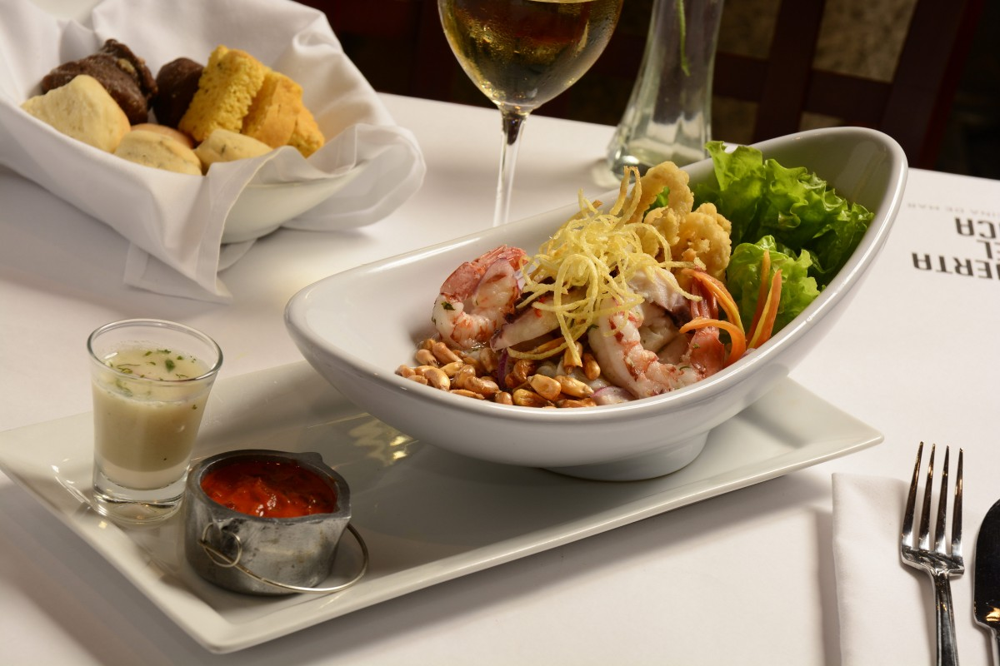
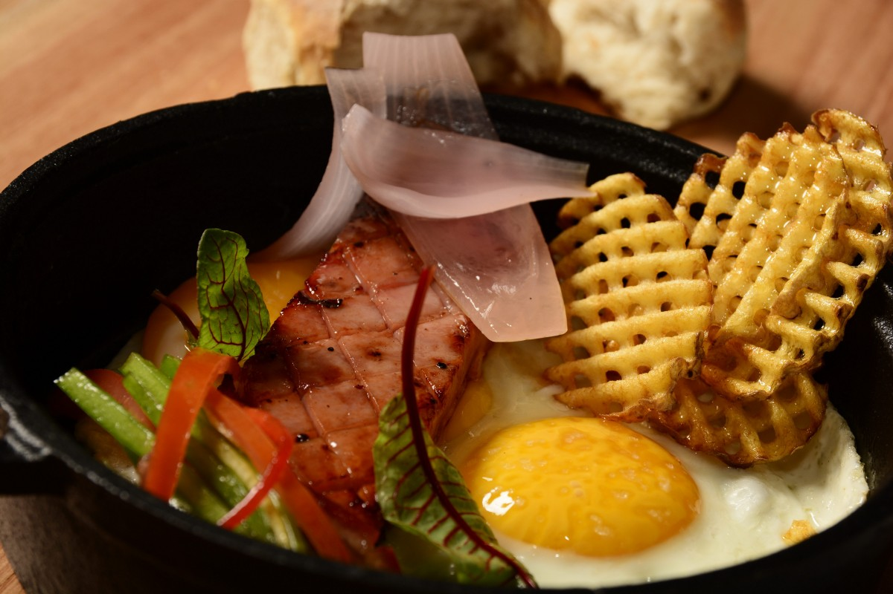
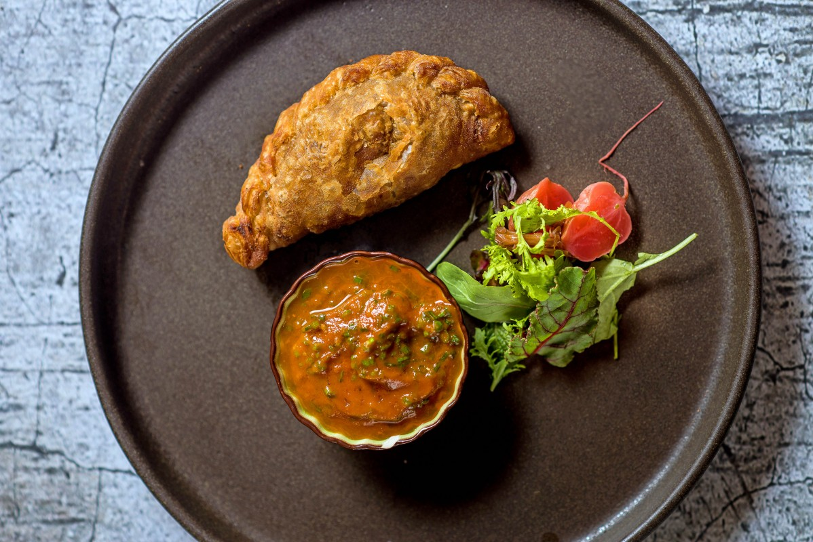
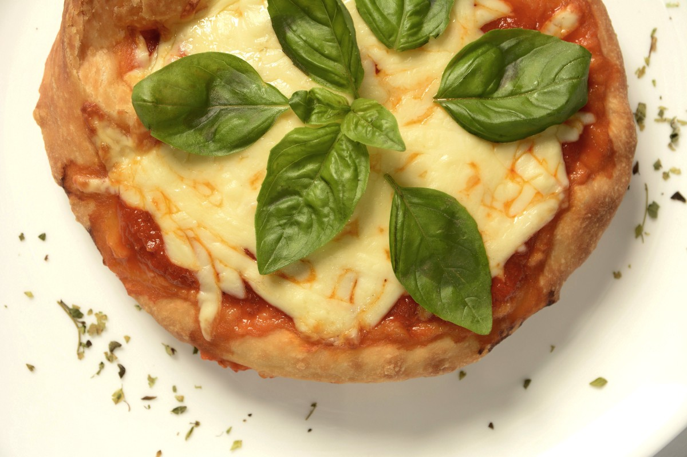
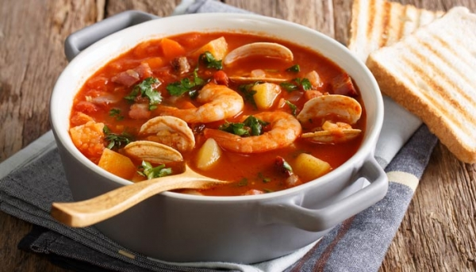
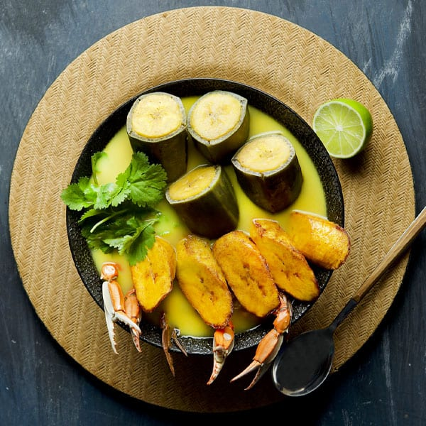
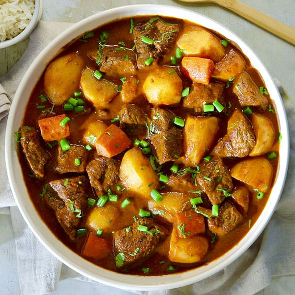
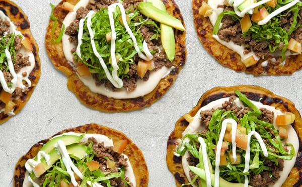

ENTRADAS
EL CEVICHE CREMOSO

Un plato típico de la gastronomía peruana. Propuesto como entrada, este ceviche lleva dados de salmón marinados en jugo de lima, crema de ají amarillo, chips y maíz frito. Por sus dimensiones es un plato que, si bien se sirve como entrada, podría perfectamente pasar por un principal.
Precio: Q145.00
EL GRAMAJO

Una receta que data de la época de la gran inmigración europea a la Argentina y que constituye un clásico de nuestra gastronomía. En Inmigrante, Leandro Di Mare le dio una vuelta de rosca, servido por separado, la idea es que el comensal lo mezcle a gusto. Lleva Jamón marinado y glaseado a la parrilla, huevo a baja temperatura con polvo de aceitunas negras, salteado de arvejas, cebolla encurtida y papas fritas a la provenzal.
Precio: Q175.00
LAS EMPANADAS DE CIERVO

Una de las entradas de la carta de mediodía que tranquilamente podría ser un plato principal, tanto por su elaboración como por su contundencia (obvio no pidiendo alguna, sino varias). La masa es casera y el relleno se prepara con carne de ciervo que fue braseado por muchas horas. Se sirve con una fresca ensalada de rabanitos y verdes, más una salsa de tomates con limón que potencia todos los sabores. Para los amantes del picante, puede acompañarse también con un picante de Cachi.
Precio: Q100.00
PIZZA FRITA MARGHERITA

Un plato típico de la cocina callejera napolitana, que aquí proponen como entrada en porciones individuales. La pizza frita Margherita sale con mozzarella, tomate y albahaca fresca y es una gran opción para probar una versión distinta de un plato clásico.
Precio: Q115.00
PLATOS FUERTES
SOPA DE MARISCOS

La sopa de mariscos es muy variada, posee suficientes frutos el mar que lo hacen una verdadera delicia. Incluye pescado, camarón, cangrejo, calamar y pulpo en un consomé de vino blanco y ajo. Incluye bebida.
Precio: Q150.00
SOPA DE JAIBA

Si te fascina el sazón costeño debes probar nuestra rica sopa de jaiba hondureña, preparada con plátano verde y maduro para un sabor sin igual. Incluye bebida.
Precio: Q120.00
ESTOFADO DE RES

Si te interesan los platillos de cocina hondureña, puedes probrar nuestro Estofado de res con papa y vino tinto. Incluye bebida.
Precio: Q90.00
ENCHILADAS DE PLÁTANO

Ricas enchiladas de plátano hechas con lechuga, aguacate, tomate, crema, platanos maduros y nuestra especial salsa rosada. Incluye bebida.
Precio: Q145.00